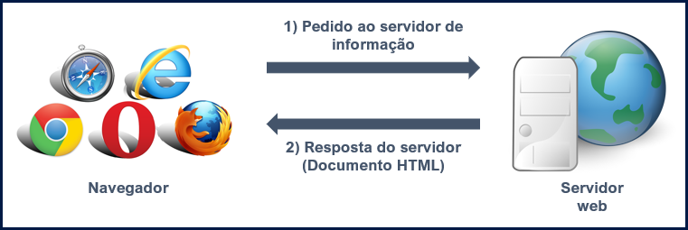

Na aula de hoje vamos estudar a história da internet, como ela foi desenvolvida e qual era seu principal objetivo no início.
Vamos iniciar nosso curso de Desenvolvimento de páginas web aprendendo HTML, pois ele é a base para desenvolver nossos sites.
Mas antes de começar a programar, também é preciso conhecer a história da internet e do HTML para entendermos como eles foram criados e como funcionam.
A história da internet começa no contexto da Guerra Fria (1945 - 1991).
Com o objetivo de facilitar a troca de informações, o Departamento de Defesa dos Estados Unidos (ARPA - Advanced Research Projects Agency) desenvolveu um sistema de compartilhamento de informação entre pessoas distantes geograficamente. E assim surgiu o protótipo da primeira rede de internet, a Arpanet (Advanced Research Projects Agency Network).
Em 29 de outubro de 1969 foi estabelecida a primeira conexão entre a Universidade da Califórnia e o Instituto de Pesquisa de Stanford. Nesse dia o primeiro e-mail foi enviado e a partir daqui as universidades de tecnologia passaram a criar projetos para desenvolver uma rede capaz de conectar computadores de todo o mundo.
A internet no Brasil começou a ser usada na educação, em outubro de 1988. O Laboratório Nacional de Computação Científica se conecta com a Universidade de Maryland dos Estados Unidos e as únicas ações feitas eram trocar e-mails e compartilhar arquivos.
Em 20 de dezembro de 1994 a EMBRATEL lança um serviço experimental de internet comercial no Brasil, para usá-lo foram selecionados apenas cinco mil usuários. E, em 1995 surgiram novas empresas provedoras de internet, disseminando assim a internet para mais usuários.
A partir de 1996 a internet continuou crescendo no Brasil, tendo cada vez mais sites brasileiros e cada vez mais empresas provedoras de internet, tornando-a mais acessível para todas as pessoas até chegar aos dias de hoje.
O HTML é uma linguagem de marcação proposta por Tim Berners-Lee no final da década de 1980.
O objetivo era criar um mecanismo simples que pudesse ser usado por qualquer pessoa que quisesse compartilhar documentos científicos.
Assim o HTML se tornou um padrão usado nos documentos para compartilhar informações pela internet. Ele define como devemos escrever um documento informando os títulos, parágrafos, imagens e vídeos inseridos no site.
Isso ajudou muito no crescimento da internet, caso não existisse um padrão, cada desenvolvedor apresentaria de uma forma diferente seus sites e os navegadores web também não teriam como interpretar um documento sem seguir um padrão.
Desde de sua criação até os dias atuais o HTML sofreu várias alterações, a cada versão novas funcionalidades são adicionadas e problemas são resolvidos, atualmente o HTML está na versão 5.
Em 1991 os cientistas Robert Cailliau e Tim Berners-Lee apresentaram o projeto www (World Wide Web). Esse sistema foi muito importante para expandir o uso da internet e torná-la o que é hoje.
Com a www foi possível criar servidores de informação contendo textos, imagens, músicas e vídeos.
A www, chamada muitas vezes de Web, não é uma rede como a internet, mas um conjunto de programas de software.
Um servidor www é um computador que responde a pedidos de informação usando o protocolo HTTP (Hyper Text Transport Protocol). O servidor responde enviando informações no formato HTML (Hyper Text Markup Language).
Um servidor é um computador onde hospedamos nosso site, ou seja, é onde colocamos os documento HTML e outros arquivos usados no nosso site. Os documentos HTML hospedados nesse computador podem ser acessados por qualquer computador com acesso a internet através de um domínio.
O domínio é como um endereço que aponta para o servidor onde está seu site. Por exemplo, o site que você está acessando agora está no domínio www.edicursos.com.br, esse endereço aponta para o servidor onde deixamos nossos documentos HTML que formam esse site.
Quando você acessa um site, seu navegador é o responsável por fazer o pedido ao servidor www e após receber a resposta. Ele interpreta o código HTML transformando-o no site que você visualiza.
Veja na imagem abaixo a ilustração desse processo.

HTML: Linguagem de marcação usada para formatar os textos das páginas da www. Permite adicionar formatação de texto, incluir elementos multimídia (sons, imagens, vídeos) e também usar hiperlinks entre diferentes documentos.
HTTP: É o protocolo usado na www para fazer transferências dos documentos desenvolvidos em HTML.
WWW: Uma rede virtual dentro da internet constituída pelo servidor de documentos HTML, e pelos computadores clientes que fazem pedidos de informação aos servidores utilizando o protocolo HTTP.
Internet: A rede mundial, que liga milhares de outras redes e computadores.
Nessa aula vimos que a internet foi criada no contexto histórico da Guerra Fria, com o objetivo de compartilhar informações de forma mais eficiente e segura.
Também vimos que o criador do HTML foi Tim Berners-Lee, o qual também foi um dos criadores da Web que usamos atualmente para navegar entre as páginas da internet.
Além disso vimos como é o funcionamento da Web onde há servidores que hospedam os sites e para acessar esses sites usamos os navegadores que fazem o trabalho de interpretar o código HTML das páginas.
Caso você tenha ficado com dúvidas ou tenha alguma sugestão mande sua pergunta ou envie uma mensagem para nós, responderemos o mais rápido possível.
Na próxima aula vamos aprender a instalar os programas usados para desenvolver nossos sites usando HTML.
DIANA, Daniela. História da Internet. TodaMateria, 2019. Disponível em: https://www.todamateria.com.br/historia-da-internet/. Acesso em 22 de dezembro de 2019.
LONGEN, Andrei. A História da Internet. WEBLINK, 2019. Disponível em: https://www.weblink.com.br/blog/historia-da-internet/. Acesso em 25 de dezembro de 2019.
Universidade do Porto. História da Internet. FACULDADE DE ENGENHARIA DA UNIVERSIDADE DO PORTO, 2000. Disponível em: https://web.fe.up.pt/~mgi99022/goii/M1/final.doc. Acesso em 23 de dezembro de 2019.